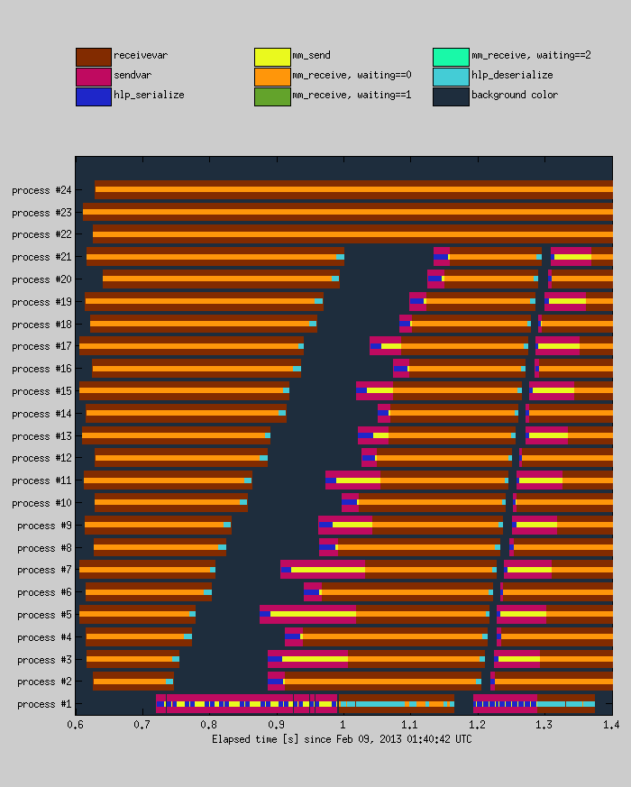

mmsodaAnalyzeTimings()
mmsodaAnalyzeTimings(...)
mmsodaAnalyzeTimings()
mmsodaAnalyzeTimings analyzes the timings files and visually presents the information contained in them so that network traffic and load balancing may be analyzed posterior to the optimization. Note that this does require the timings flag to be set in the jobscript (see also mmsodaWriteJobscript).
The figure below gives an impression of what the mmsodaAnalyzeTimings() result looks like (for a very fine-grained problem).

mmsodaAnalyzeTimings(...)
The behavior may be tweaked using various options (see table below).
| Option | Description |
| 'bgColor' | Controls the figure's background color. Default is [0.12,0.18,0.24]. |
| 'bottomLayerHeight' | Controls the vertical size of the least detailed patch objects. Default is 0.7. |
| 'colorTable' | Defines the default colors with which the different activities are visualized. Default is:
[0.3,0.5,0.7;... 0.7,0.5,0.3;... 1.0,1.0,0.0;... 1.0,0.0,1.0;... 0.9,0.9,0.9;... 0.7,0.7,0.7;... 0.5,0.5,0.5;... 1.0,1.0,1.0]; |
| 'endAt' | Defines the end time in seconds for which the timings will be retrieved from the timings_*.mat files. Default is 10.0. |
| 'showLegend' | Whether to include a legend. Default is true. |
| 'startFrom' | Defines the start time in seconds for which the timings will be retrieved from the timings_*.mat files. Default is 0.0. |
| 'topLayerHeight' | Controls the vertical size of the most detailed patch objects. Default is 0.3. |
| 'vertSep' | Controls the vertical separation between bands pertaining to individual processes. Default is 0.3. |